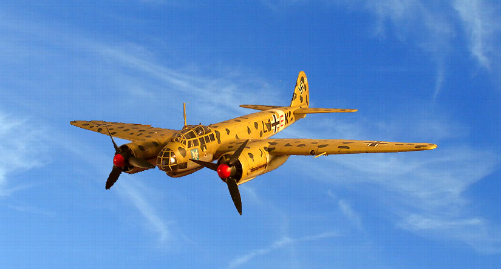
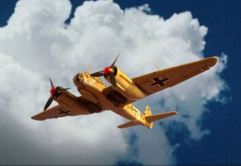
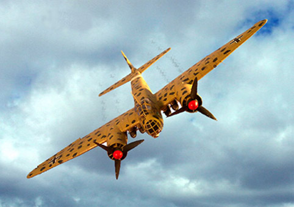
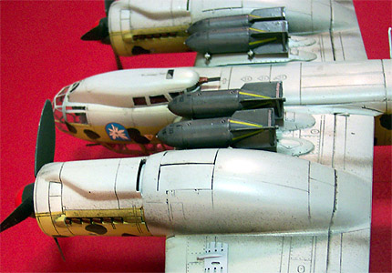
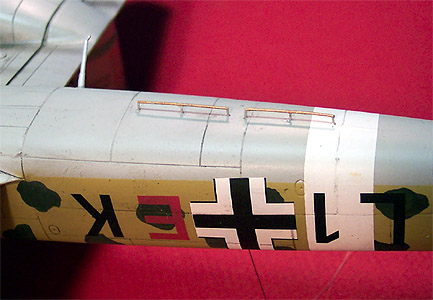
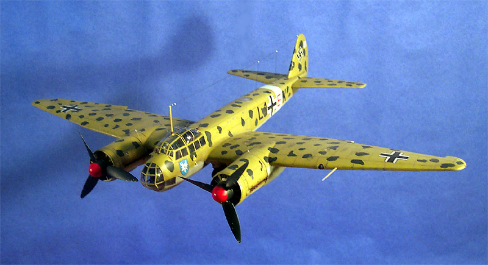
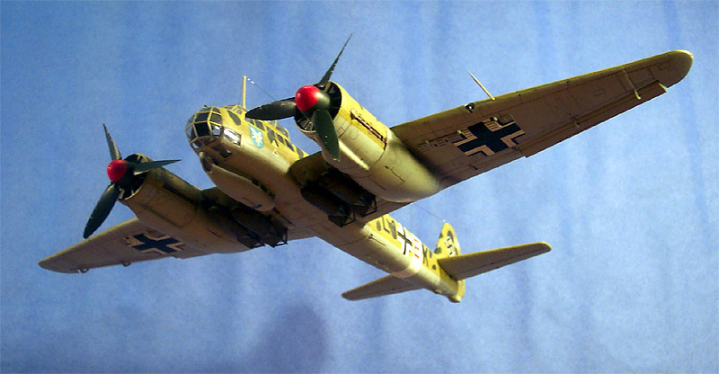
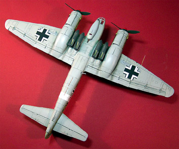
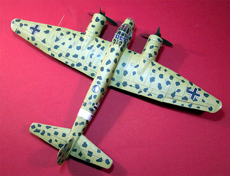

{kind=link}
{kind=link}


Pro Modeler Ju-88 A-4

Kit #4531 MSRP TBA
Images and text Copyright � 2004 by Matt Swan
Developmental Background
The Junkers Ju-88 looks clumsy and all out of proportion but it demonstrated during the Second World War that it was perhaps one of the most versatile aircraft of the period. First designed in 1936 as a "Schnellbomber" it had its first flight in that same year and was soon to display its superior performance. With the demise of Professor Junkers, the engineers saw the potential of this fast medium bomber and felt that improvements could still be made. Knowing the advantages of tactical dive-bombing with the pilot aiming the aircraft at the target, tests were carried out after dive brakes had been fitted. It was to give the Ju-88 an additional advantage over other bombers that were in the Germany inventory at the time.

The Ju-88 was well built and could take a substantial amount of damage and still fly home. Despite its complexity the plane was greatly prized by those who flew it and was one of the most widely used planes in the Luftwaffe. Not only was the aircraft used extensively by the Luftwaffe, the Ju-88 was even used against the Germans by Romania and France in 1944-45. Prior to the outbreak of the Second World War, five variants had been produced but the Ju-88 never saw service in any of the early campaigns such as the Spanish Civil War or the invasion of Poland. The A-version was the most heavily produced version and measured 20 meters from wingtip to wingtip. About 20 meters long and weighing nearly seven tons the 88 received its baptism of fire in 1940 during the battles in Norway. A group from Kampfgeschwader 30 almost sank the British cruiser H.M.S. "Suffolk"
Although the Ju-88 had an extensive array of machine guns for defensive purposes, two in the rear fuselage, one underneath, one in the cockpit and even one that could be operated by the pilot. The main problem was that all forward machine guns had to be operated by the Flight Engineer with the exception of the pilots� gun. As a result of this defensive inadequacy the Ju-88 was very vulnerable against single engine fighters and by the end of the war was used almost entirely as a night fighter where it enjoyed high levels of success against heavy bombers. Many variants of the 88 were produced during the war years with the most bizarre version being the "Mistel" This was a Ju-88 equipped with a warhead and with an Me-109 or a Fw-190 on the top as the lead plane. This unmanned Ju-88 was then dropped against the target, often with very little success.

The Ju-88 was produced from August 1939 to March 1945. The production of 88's was to end with the production of Ju-288 and Ju-388 however this never materialized due to the German war situation worsening resulting in the Ju88 being produced throughout rest of the war. Total production was estimated to be 14,780 of all sub-types with the A-4 version (bomber) and the G-series (night fighter) being the most heavily produced. Today there are only two fully restored (and original) Ju-88's left in the world, one in London and one in Ohio, USA.
The Kit
I built this kit about three or four years ago so we do not have any sprue shots to look at this time but from my recollections the parts were all well made with no flash or casting errors. All the details are finely engraved lines and rivet details. There are plenty of clear parts with options for two different rear canopies those being either a single or a dual gun position. The kit suggests two different camouflage schemes with the other option being a standard splinter pattern. The decal sheet was quite large and covered both aircraft well and included plenty of service stencils. As with most Pro Modeler kits the instructions were more in the form of a booklet rather than the more typical foldout sheets. The directions were well laid out and offered plenty of color call-outs and construction tips.
 
Construction
Construction was fairly basic and for the most part, uneventful. The few areas that presented problems were the three-piece upper canopy assembly that gave me a real hard time going together and the main wing-to-fuselage connection. From what I have heard from other modelers these are common areas of concern. A little patience, lots of dry fitting and a small application of putty got me over these hurdles. Basic interior areas were painted with Gunze-Sangyo RLM-66 and detailed with Testors enamel paints so there�s nothing unusual going on in there.

When I began construction of the model I planned on hanging it from the ceiling with gear up. I did have a little trouble with the gear doors being just slightly undersized and needed to add a few strips of styrene sheet inside the nacelles to give me something to glue to. With this in-flight thing still in mind I added some deflection to the ailerons, which are separate pieces anyway so no big surgery was required for this effect. The aerials were made from invisible thread superglued in place and then painted. The insulators are little drops of superglue placed on the thread then hit with some accelerator and painted white.

These days, whenever possible, I use aftermarket masks for large greenhouse jobs but I felt a bit masochistic here and masked this entire thing with little strips of masking tape. I think this is what drove me to use aftermarket masks on future builds. The masked areas were hit with some Gunze RLM-66 initially to give the glazing frames some good interior color then the basic exterior colors were airbrushed on. I used Model Master Sand with some flat yellow added to shift the color a bit for the upper colors and Gunze-Sangyo RLM-65 for the underside. The blotch pattern was done with Gunze RLM-70 Black/Green and was brush painted.
After the paint had cured the model was sealed with Future floor polish. Decals were applied with Micro-Set and Micro-Sol then sealed with Future. The panel lines were accented with a basic sludge wash. This was the first model that I used Tamiya X-19 Smoke on as an exhaust stain and it worked out very well. I also used the X-19 Smoke to create some smudges around the fuel filling caps. The entire model was ultimately sealed with Testors Dull Coat. This stuff can be very aggressive and if not applied properly could very well destroy your decals. I applied it with several light coats then removed the masks. Due to the potential problems associated with Testors Dull Coat I no longer use this product but use Polly Scale clear flat as my preferred flat finish.


You may click on the above images to view larger pictures
Conclusions
If you are a World War Two buff like I am then you really should have one of these in your collection. Currently the model is not in production but is on the schedule for reissue from Revell of Germany in late 2004. The model is not a simple �shake �n� bake� requiring a little work especially around the wing joint and the canopy. There are simply tons of aftermarket items available for this aircraft. Cutting Edge has mask sets, flying control surfaces, flaps, replacement propellers and decals for it. Aires offers two different engine packages, a cockpit detail package and a comprehensive (that means expensive) detail package. Aeromaster has several decal options, Czech Master has a cockpit set and Eduard has way too many detail packages to list here. It doesn�t stop there, Engines and Things, E_Z Mask, Falcon Industries, Koster Aero Enterprises, Tally Ho, Owl Decals, Moskit, Paragon, Super Scale, Techmod and Verlinden all have items for this aircraft and conversion for it. If you can�t find the stuff to fill your building requirements for this model then you are even more esoteric than I.